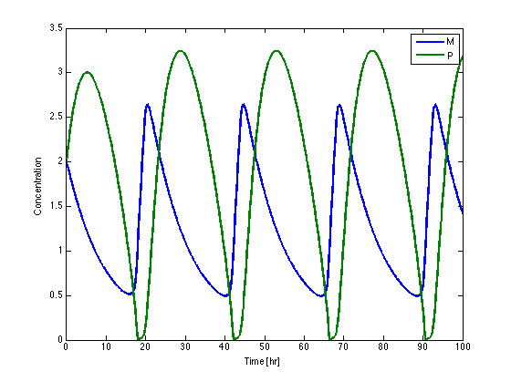
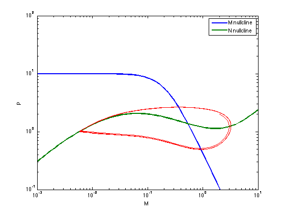
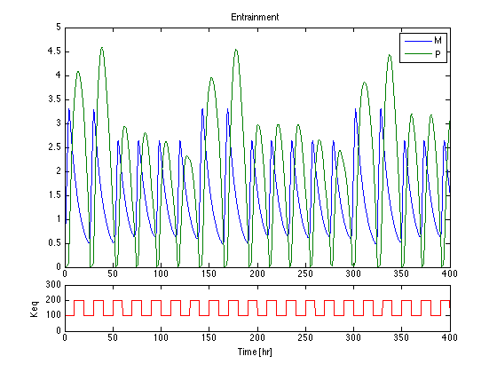

Circadian Clock
The circadian clock controls the daily physiological behavior of many organisms. It is known that for mammals the circadian clock resides in the hypothalamus region of the brain, and involves the synchronization of a gene regulatory network. A simple model of this network was proposed by Tyson and coworkers in 1999 and described in some detail in the SEMD textbook.
Contents
Citations
1. Tyson, J. J., C. I. Hong, C. D. Thron, B. Novak. 1999. A Simple Model of Circadian Rhythms Based on Dimerization and Proteolysis of PER and TIM. Biophysical J. 77:2411-2417.
2. SEMD Section 24.2.1.
Parameters
vm = 1; km = 0.1; vp = 0.5; kp1 = 10; kp2 = 0.03; kp3 = 0.1; Keq = 200; Pcrit = 0.1; Jp = 0.05;
Dependence of mRNA transcription rate on protein concentration
q = @(P) 2./(1+sqrt(1+8*Keq*P));
Concentration dynamics of mRNA (M) and protein (P).
Mdot = @(M,P) vm/(1 + (P*(1-q(P))/2/Pcrit)^2) - km*M; Pdot = @(M,P) vp*M - (kp1*P*q(P)+kp2*P)/(Jp+P) - kp3*P; M0 = 2; P0 = 2;
Numerical Solution
% Differential equations and initial conditions deriv = @(t,x) [ ... Mdot(x(1),x(2)); Pdot(x(1),x(2))]; x0 = [M0;P0]; % Calculate solution tf = 100; soln = ode45(@(t,x)deriv(t,x),[0 tf],x0); % Evaluate solution t = 0:0.1:tf; M = deval(soln,t,1); P = deval(soln,t,2); % Display solution figure(1);clf; plot(t,M,t,P,'LineWidth',2); xlabel('Time [hr]'); ylabel('Concentration'); legend('M','P');
Nullclines and the Phase Plane
figure(2);clf; Mnull = @(P) vm./km./(1 + (P.*(1-q(P))/2/Pcrit).^2); Pnull = @(P) (kp1*P.*q(P)+kp2*P)./(vp*(Jp+P)) + kp3*P/vp; Ps = logspace(-3,1,100); loglog(Ps,Mnull(Ps),Ps,Pnull(Ps),'LineWidth',2); axis([0.001 10 0.1 100]); xlabel('M'); ylabel('P'); legend('M nullcline','N nullcline');

Plotting the solution in the phase plane demonstrates the relationship between the nullclines and solution obtained above.
hold on loglog(P,M,'r'); hold off
Entrainment
The circadian clock synchronizes to periodic changes in the equilbrium constant Keq. To study this phenomena, we introduce a periodic forcing function Keq(t).
% The following function produces periodic square wave with period T u = @(t,T) (mod(t,T)/T >= 0.5); T = 20; Keq = @(t) 100 + 100*u(t,T); % Dependence of mRNA transcription rate on protein concentration q = @(P,Keq) 2./(1+sqrt(1+8*Keq*P)); % Concentration dynamics of mRNA (M) and protein (P). Mdot = @(M,P,Keq) vm/(1 + (P*(1-q(P,Keq))/2/Pcrit)^2) - km*M; Pdot = @(M,P,Keq) vp*M - (kp1*P*q(P,Keq)+kp2*P)/(Jp+P) - kp3*P; M0 = 0; P0 = 0; % Differential equations deriv = @(t,x) [ ... Mdot(x(1),x(2),Keq(t)); Pdot(x(1),x(2),Keq(t))]; x0 = [M0;P0]; % Calculate solution tf = 400; soln = ode45(@(t,x)deriv(t,x),[0 tf],x0); % Evaluate and Display solution figure(3);clf; t = 0:0.1:tf; subplot(5,1,[1:4]) plot(t,deval(soln,t)); legend('M','P'); title('Entrainment'); subplot(5,1,5) plot(t,Keq(t),'r'); axis([0 tf 0 300]); xlabel('Time [hr]'); ylabel('Keq');
Entrainment appears to be aperiodic
tf = 2000; soln = ode45(@(t,x)deriv(t,x),[0 tf],x0,odeset('RelTol',1e-6)); % Evaluate solution t = 400:0.1:tf; M = deval(soln,t,1); P = deval(soln,t,2); figure(4);clf; semilogy(M,P); xlabel('M'); ylabel('P');